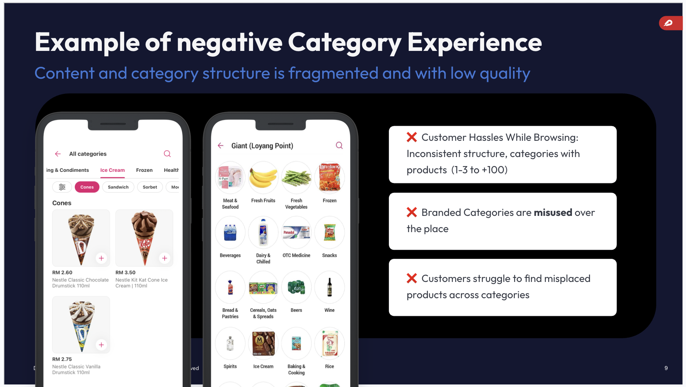
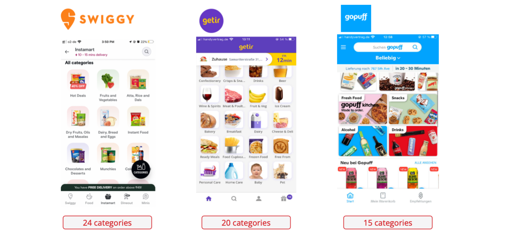
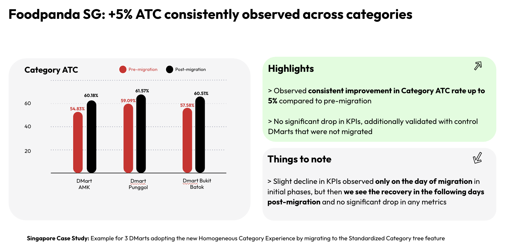
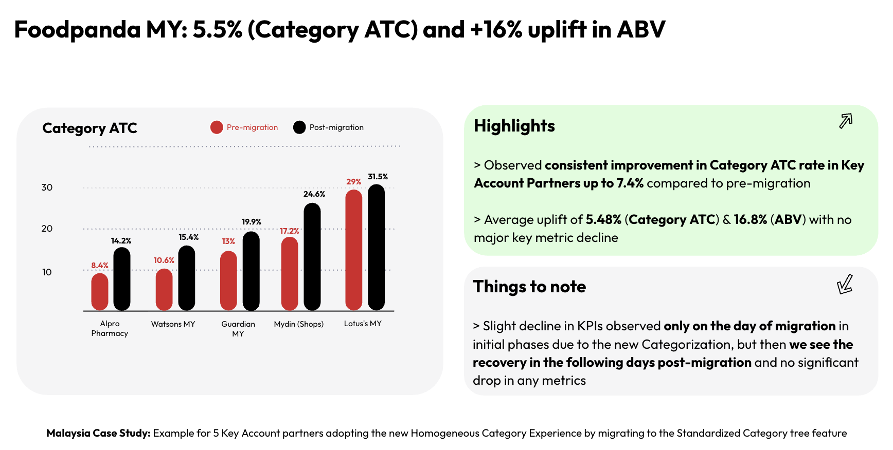
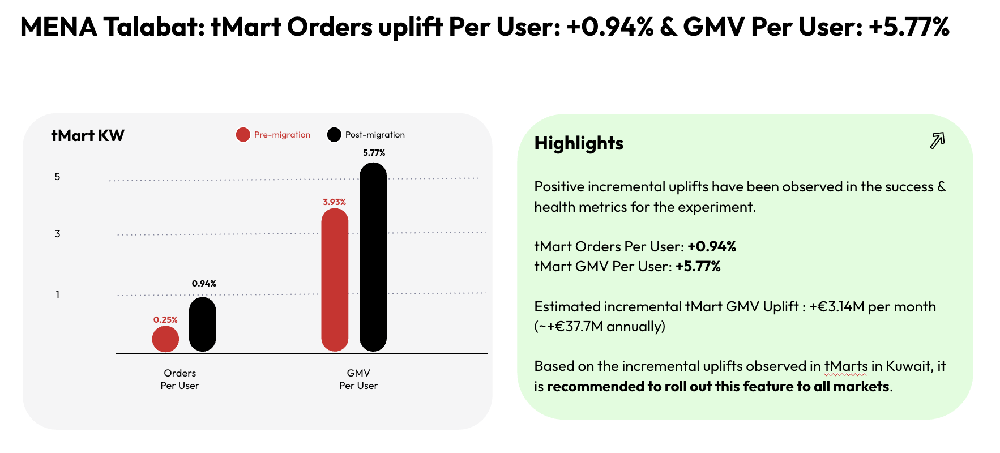
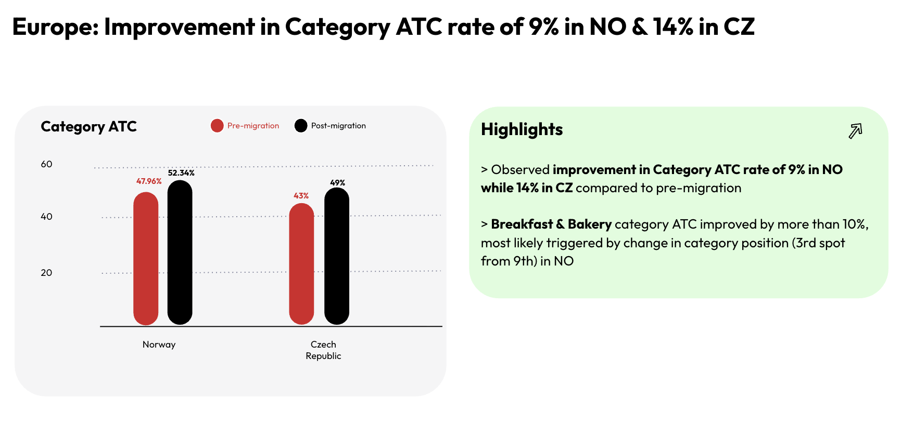

The Situation
Delivery Hero operates Quick Commerce under multiple brands - Foodpanda, Talabat, PedidosYa, HungerStation, Yemeksepeti, Foodora - serving customers across APAC, MENA, and Europe. Within each brand, customers browse groceries and everyday items through category navigation: L1 categories (Beverages, Snacks, Dairy) and their subcategories.
The problem: browsing from one shop to another within the same vertical like Groceries was a deeply inconsistent experience. Different stores had wildly different numbers of categories, different naming conventions, different images, and different ranking orders - even for the same products in the same vertical.

54% of Talabat shopping sessions start from category browsing (vs. 38.9% via search). Category navigation is the primary discovery surface for most customers - yet the experience was completely fragmented across shops.
What Was Breaking
As a customer in Singapore, switching from one grocery store to another meant relearning the entire category structure. A customer looking for Milo might find it under "Coffee, Tea & Malt" in one Dmart and under "Beverages" in another - a completely different L1 category.
- Inconsistent number of L1 categories - ranging from 9 to 40+ across shops in the same city and vertical
- Inconsistent naming - "Vegetables" vs "Veggies", "Snacks & Confectionery" vs "Chips & Snacks"
- Inconsistent imagery - no standardised category tile assets
- Inconsistent ranking - customers couldn't develop a mental model of where to find things
- Operational overhead - hundreds of catalog teams managing bespoke trees per vendor, with no shared tooling
The result was poor product findability, cognitive overload when switching shops, and measurable drop-off in the category-to-cart journey.
What the Data and Benchmarks Told Us
Before designing a solution, I grounded the work in two evidence sources: competitive benchmarking and internal UX research from PeYa (PedidosYa) teams.
Competitive Benchmarking
Leading Quick Commerce players globally keep category counts tightly constrained - even with very large assortments:
(15k+ SKUs)

Our Dmarts had 32+ categories with only 3.5k SKUs - more than any major supermarket chain with 15k+ SKUs. We were creating cognitive overload for our customers and operational complexity for our teams.
Internal Data: ABS and Subcategory Count
Internal analytics confirmed the relationship between subcategory count and Add-to-Basket Score (ABS). DMarts with 6–8 subcategories per L1 category consistently outperformed those with more or fewer. Too many subcategories diluted assortment density; too few reduced findability.
Homogeneous Navigation Framework
I introduced the concept of Homogeneous Navigation - a vertical-level category tree template that applies consistently across all shops within a country × vertical segment (e.g., all grocery stores in Singapore share the same tree structure).
The framework was built on five non-negotiable principles:
Controlled Experiments → Global Rollout
I ran a phased experiment strategy - validating the framework in one region before scaling to the next. This allowed us to catch region-specific issues early and build an evidence base for the global rollout case.




Impact
Beyond the headline numbers, the framework delivered compounding operational benefits: catalog teams reduced the time spent managing bespoke trees, new vendor onboarding became faster and more consistent, and the global reporting infrastructure became simpler to maintain with standardised category structures.
Yemeksepeti (Turkey) had already implemented a version of this pattern natively - and their shops showed the strongest ABS metrics in the network. This became our strongest internal validation that homogeneous experience works at scale.
What I Learned
- Standardisation is a harder sell than it sounds. Key accounts pushed back on losing their custom trees. Building the evidence base first - competitive benchmarks, internal ABS data, the PeYa UX research - was what made the persuasion possible.
- Flexibility lives in non-native categories. The key insight was allowing promotional/non-native category flexibility while holding the core taxonomy rigid. This gave commercial teams what they needed without compromising the customer experience.
- Operational impact compounds. The biggest surprise was how much catalog team efficiency improved. Fewer custom trees meant fewer edge cases, faster onboarding, and cleaner data pipelines downstream.
- Ranking matters as much as structure. We initially underestimated how much category ranking affected ATC. A consistent structure with inconsistent ranking still created confusion. Locking ranking in the framework was a later addition that proved critical.